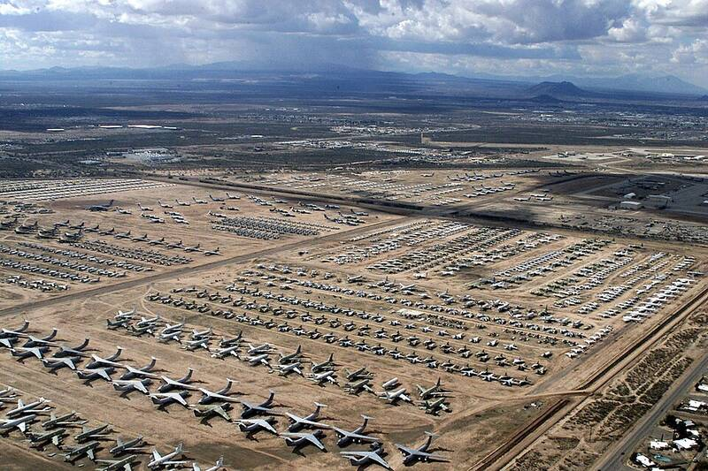

Davis-Monthan AFB
Arizona

Home of the aircraft boneyard in Tucson. 1
Open in the interactive Watcher
Related
Sources
- Davis–Monthan Air Force Base Wikipedia
Arizona

Home of the aircraft boneyard in Tucson. 1
Open in the interactive Watcher